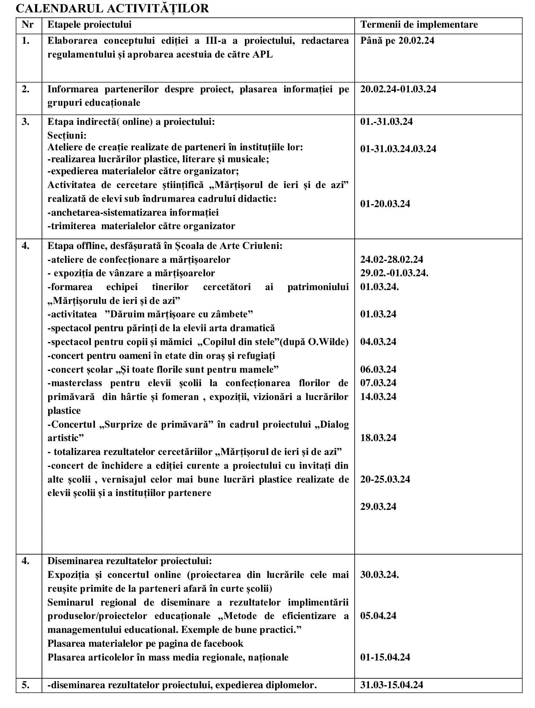

Proiect Educațional Internațional ArtMărțișor
Punerea în valoare a propriei identități este un pas spre a recunoaște importanța multiculturalității și diversității și o condițoie importantă pentru conviețuirea pașnică a oamenilor

Prin proiectul ArtMărțișor, lansat în 2021 ne-am pus scopul de a educa tinere generații în valori și tradiții, prin implicarea lor în diverse activități extracurriculare, asociate MĂRȚIȘORUL și practicilor legate de acesta, fiind cel mai bine cunoscut simbol național. Totodată proiectul a adus beneficii esențiale în eficientizarea managementului educațional și organizațional al instituției, a lărgit palitra activităților extracurriculare și a mărit numărul de parteneri, a făcut mai vizibilă activitatea școlii la nivel comunitar național și internațional. În ediția a III-a a proiectului ArtMărțișor au luat parte peste 600 de elevi și preșcolari din R. Moldova și România.
Autor de proiect, organizator - Dimitrașco Natalia
Etapele proiectului
- Pregătire (întruniri ale echipei de lucru), până pe 20.02.24
- Informarea partenerilor potențiali, 20.02.24 - 01.03.24
-
Desfășurarea pe trei secțiuni:
- Cu prezență fizică/offline/desfășurată în localitate,
- La distanță/online
- Noutate în proiect: Cercetare "Mărțișorul de ieri și de azi"
- Diseminarea rezultatelor


Activitățile proiectului
Ateliere de creație
- 4 ateliere de confecționarea a mărțișoarelor în ȘA Criuleni, Școala Primară Criuleni, Gimnaziul s.Ustia, cu asociația seniorii din localitate
- expoziția cu vânzare a mărțișorilor în fața ȘA Criuleni
-
activitatea "Dăruim mărțișoare cu zâmbete" în 8 instituții din oraș
(Primăria, Consiliul Raional, Direcția Educație, Școala primară, biblioteca, muzeul, centrul pentru bătrâni, casa de cultură) - master-class de confecționare a brândușilor din hârtie
Secțiunea offline -
Concerte,Spectacole
- concert pentru oameni în etate din oraș și refugiați
- concert școlar pentru mame, profesori, spectatori invitați
- concert de caritate pentru beneficiarii centrului "AI.Grăjdian"
- spectacolul trupei școlare de teatru pentru copii cu CES "Copilul din stele" (după O.Wilde)
- 2 spectacole ale trupei școlare de teatru "Primăvara întâlnește pe Crăiasa Zăpezii", pentru părinți și benefeciarii spitalului Criuleni
- concert - expoziție în aer liber cu transmisie în direct a materialelor secțiunii online
Excursia la Muzeul de Etnografie și Istorie Naturală
20 elevi ai școlii informați, educați și motivați
Secțiunea online
peste 300 de copii/tinerii din R. Moldova și România implicați în ateliere de creație și activități artistice
- organizarea atelierelor de creație de către parteneri în instituțiile lor și realizarea lucrărilor artistice
- expedierea materialelor către organizator
- primire materialelor, înregistrarea, evoluarea, plasarea pe pagina fb;
- lucrări plastice
- poezii, texte
- cântece
- melodii înterpretate la instrumente
- dansuri
Festivitatea de închidere a ediției proiectului
- atelier de desen
- expoziția mărțișoarelor și desenelor
- concert - 7 școli de arte din regiune, peste 200 participanți, 400 spectatori
"Mărțișorul de ieri și de azi" - o călătorie în inima poporului
24 de elevi voluntari implicați, 72 de respondeți din diferite regiuni ale Moldovei și a României
Secțiunea cercetare
- Școala Gimnazială "Ienechiță Vărănescu" București
- Șsoala Gimnazială "D. D. Părășcanu" Tomești
- Școala de Arte Plastice "Nicolae Moisei" Telenești
- Școala Gimnazială "Sfântul Nicolae" Vânători, jud.Galați
- Școala Gimnazială Teslui - Olt
- Școala de Arte DUbăsarii Vechi "V.Glinca", rl.Criuleni
- Școala de Arte Bălăbănești, rl.Criuleni
- Școala de Arte Criuleni
Rezultatei
-
- am promovat valori naționale în comunitatea locală/școlară
- am organizat 18 activități extracuriculare în oraș și regiune
- am întărit parteneriate cu 7 școli de arte din regiune și 51 de unități educaționale îndepărtate ale țării și din România
-
- am motivat 598 de copii/tineri talentați în domeniul de artă, peste 100 de cadre coordonate
- am promovat segmentului științific în educație extrașcolară
- am motivat 24 de elevi pasionați de tradiție și patrimoniul
-
- am realizat activități de asigurare a calității proiectului
- am elaborat conceptul ediției
- am elaborat trofeul proiectului
- am audiat și vizionat sute de materiale primite de la cadre didactice
- am contribuit la selectarea programelor concertistice în corelare cu cerințele curriculare
-
- am promovat imaginea școlii la nivel de localitate, APL, părinții elevilor, mediul online - peste 1000 de spectatori
- am promovat învățământul extrașcolar artistic prin realizări ale elevilor și cadrelor coordonatoare - elevii fiind aplaudați
- am contribuit la îmbunătățirea competențelor cheie și a celor specifice a tuturor actanților - prin învățare/repetare
- am contribuit la formarea personalităților copiilor prin experiența emoțională valoroasă - atmosferă de creație, cooperare, prietenie